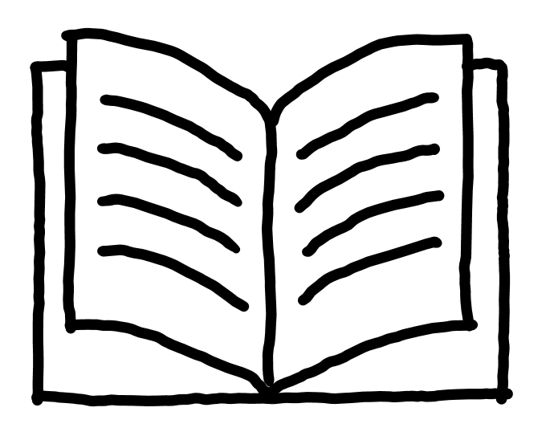

Sollten soziale Ungleichheiten durch Politik nicht ausgeglichen werden, haben sozial benachteiligte Kinder immer weniger Chancen, gut gebildet zu werden. Dies sowie zunehmender Lehrermangel führt dazu, dass öffentliche Schulen an Ansehen verlieren und Privatschulen der Standard für gute Abschlüsse werden.